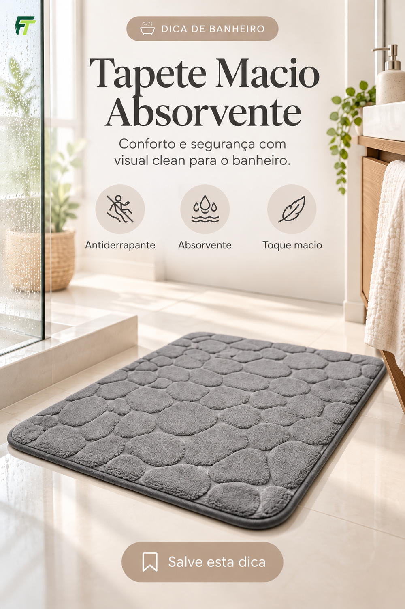

Casa e Decoração
Tapete macio e absorvente para a saída do banho
O tapete macio absorvente ajuda a manter a saída do box mais confortável e com menos água no piso. Confira as medidas, a forma de lavagem, o tempo de secagem e a aderência da base ao seu revestimento.
Pontos principais
- Toque macio
- Base antiderrapante
- Absorção, conforto e mais segurança no banheiro
Confirme preço, modelo, medidas, garantia e itens incluídos diretamente no anúncio.
Link individual deste produto em atualização.
Publicidade: esta página pode conter link de afiliado.